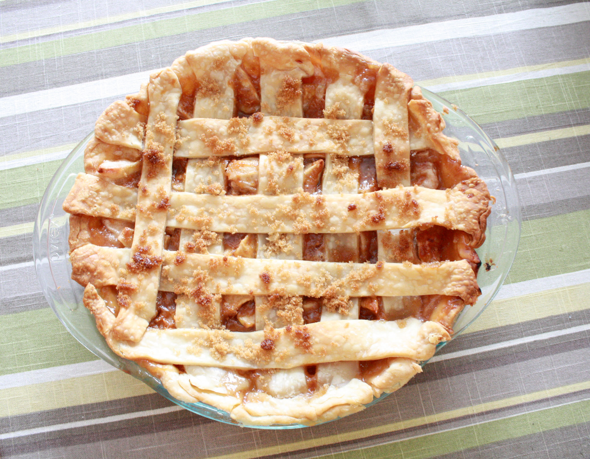

Carmel Apple Pie

This delicious deep-dish apple pie with a hint of rum is sweetened with creamy caramel sauce.
Ingredients
- ½ cup sugar
- 1 teaspoon Spice Islands® Pumpkin Pie Spice
- 1 tablespoon Argo® Corn Starch
- 5 McIntosh or Granny Smith apples, peeled and cored (or more if desired)
- 1 tablespoon lemon juice
- 1 teaspoon rum OR imitation rum flavoring
- 1 (9 inch) unbaked deep dish pie crust
- 2 tablespoons butter OR margarine
- 3 tablespoons prepared caramel sauce
- ½ cup flour
- ⅓ cup brown sugar
- ¼ cup butter OR margarine
steps
- Mix sugar, pumpkin pie spice and corn starch in a large bowl.
Cut apples into 1/4-inch thick slices and place in a separate bowl.
Sprinkle apples with lemon juice and rum; add to dry ingredients.
Stir to combine. Place in piecrust. Dot with 2 tablespoons of butter.
Drizzle with caramel sauce.
- Stir flour and brown sugar together in small bowl.
Cut in 1/4 cup butter until mixture resembles coarse meal.
Sprinkle evenly over top of pie.
- Bake in a preheated 400 degrees F oven for 10 minutes.
Reduce heat to 350 degrees F and bake an additional 40 to 50 minutes, until golden brown.
Delicious when served warm with a scoop of vanilla ice cream.